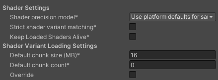

QNX Player settings reference
QNX Player settings lets you customize how Unity builds and displays your final application. To access the Player settings window for QNX, go to Edit > Project Settings > Player and select the QNX tab. You can use the PlayerSettings API to control most of the settings available in this window. For a description of the general Player settings, refer to Player SettingsSettings that let you set various player-specific options for the final game built by Unity. More info
See in Glossary.
General settings
The Player settings differ between the platform modules that you have installed. Each platform has its own Player settings which you must set for each version of your application you want to build. To navigate between them, click the tabs with the appropriate platform operating system icon.

You can find documentation for the properties in the following sections:
Icon
Enable the Override for QNX setting to assign a custom icon for your QNX game.
Resolution and presentation
Use the Resolution and Presentation section to customize aspects of the screen’s appearance in the Resolution and Standalone Player Options sections.
Resolution section
This section lets you customize the screen mode and default size.
| Property | Description |
|---|---|
| Use 32-bit Display Buffer | QNX only supports 32-bit color buffers. |
| Disable Depth and Stencil | This isn’t supported on the QNX platform. |
| Render Over Native UI(User Interface) Allows a user to interact with your application. Unity currently supports three UI systems. More info See in Glossary |
This isn’t supported on the QNX platform. |
Splash Image
The Virtual Reality Splash Image setting is used for selecting a custom splash image for Virtual RealityVirtual Reality (VR) immerses users in an artificial 3D world of realistic images and sounds, using a headset and motion tracking. More info
See in Glossary (VR) displays. However, it doesn’t apply to QNX platform.
Other Settings
This section allows you to customize a range of options organized into the following groups:
Rendering
Use these settings to customize how Unity renders your game for the QNX platform.
| Property | Description | |
|---|---|---|
| Color Space | Choose which color space Unity uses for rendering: Gamma or Linear. Refer to the Linear rendering overview for an explanation of the difference between the two. | |
| Gamma | Gamma color space is typically used for calculating lighting on older hardware restricted to 8 bits per channel for the framebuffer format. Even though monitors today are digital, they might still take a gamma-encoded signal as input. | |
| Linear | Linear color space rendering gives more precise results. When you select to work in linear color space, the Editor defaults to using sRGB sampling. If your Textures are in linear color space, you need to work in linear color space and disable sRGB sampling for each Texture. | |
| Force SRGB blitA shorthand term for “bit block transfer”. A blit operation is the process of transferring blocks of data from one place in memory to another. See in Glossary |
Enable this to use Force SRGB blit for Linear color space. If your graphics drivers don’t support the linear color space, selecting this option will convert Linear color space to Gamma (SRGB) color space. | |
| Multithreaded Rendering | Enable this option to use multithreaded rendering. This is only supported on Metal. | |
| Static BatchingA technique Unity uses to draw GameObjects on the screen that combines static (non-moving) GameObjects into big Meshes, and renders them in a faster way. More info See in Glossary |
Enable this option to use Static batching. | |
| Dynamic Batching | Enable this option to use Dynamic BatchingAn automatic Unity process which attempts to render multiple meshes as if they were a single mesh for optimized graphics performance. The technique transforms all of the GameObject vertices on the CPU and groups many similar vertices together. More info See in Glossary on your build (enabled by default). Note: Dynamic batching has no effect when a Scriptable Render Pipeline is active, so this setting is only visible when nothing is set in the Scriptable Render PipelineA series of operations that take the contents of a Scene, and displays them on a screen. Unity lets you choose from pre-built render pipelines, or write your own. More info See in Glossary Asset Graphics setting. |
|
| Static Batching Threshold | Controls the maximum vertex threshold used when batching. For more information, refer to Sprite Batch Vertex Threshold. | |
| GPU Compute SkinningThe process of binding bone joints to the vertices of a character’s mesh or ‘skin’. Performed with an external tool, such as Blender or Autodesk Maya. More info See in Glossary |
Enable this option to enable DX11/ES3 GPU compute skinning, freeing up CPU resources. | |
| Graphics Jobs | Enable this option to instruct Unity to offload graphics tasks (render loops) to worker threads running on other CPU cores. This is intended to reduce the time spent in Camera.Render on the main thread, which is often a bottleneck. |
|
| Texture compressionA method of storing data that reduces the amount of storage space it requires. See Texture Compression, Animation Compression, Audio Compression, Build Compression. See in Glossary format |
Choose the texture compression3D Graphics hardware requires Textures to be compressed in specialized formats which are optimized for fast Texture sampling. More info See in Glossary format to use for textures in your Project. The options are ETC, ETC2, ASTC, DXT, and PVRTC. For more information on each of these compression formats, refer to TextureImporterOverride. |
|
| Normal MapA type of Bump Map texture that allows you to add surface detail such as bumps, grooves, and scratches to a model which catch the light as if they are represented by real geometry. See in Glossary Encoding |
Choose Normal Quality or High Quality to set the lightmapA pre-rendered texture that contains the effects of light sources on static objects in the scene. Lightmaps are overlaid on top of scene geometry to create the effect of lighting. More info See in Glossary encoding. This setting affects the encoding scheme and compression format of the lightmaps. |
|
| Lightmap Streaming | Enable this option to load only the lightmap mipmaps as needed to render the current game CamerasA component which creates an image of a particular viewpoint in your scene. The output is either drawn to the screen or captured as a texture. More info See in Glossary. This value applies to the lightmap textures as they are generated. Note: To use this setting, you must enable the Texture Streaming Quality setting. |
|
| Streaming Priority | Set the lightmap mip map streaming priority to resolve resource conflicts. These values are applied to the light map textures as they’re generated. Positive numbers give higher priority. Valid values range from –128 to 127. | |
| Frame Timing Stats | Enable this option to gather CPU/GPU frame timing statistics. | |
| OpenGL: ProfilerA window that helps you to optimize your game. It shows how much time is spent in the various areas of your game. For example, it can report the percentage of time spent rendering, animating, or in your game logic. More info See in Glossary GPU Recorders |
Enable profiler recorders when rendering with OpenGL. | |
| Virtual Texturing (Experimental) | Indicates whether to enable Virtual Texturing. Note: The Unity Editor requires a restart for this setting to take effect. | |
| Load/Store Action Debug Mode | Highlights undefined pixelsThe smallest unit in a computer image. Pixel size depends on your screen resolution. Pixel lighting is calculated at every screen pixel. More info See in Glossary that might cause rendering problems on mobile platforms. This affects the Unity Editor Game view, and your built application if you select Development BuildA development build includes debug symbols and enables the Profiler. More info See in Glossary in Build Settings. Refer to LoadStoreActionDebugModeSettings for more information. |
|
| 360 Stereo Capture | Indicates whether Unity can capture stereoscopic 360 images and videos. When enabled, Unity compiles additional shaderA program that runs on the GPU. More info See in Glossary variants to support 360 capture (currently only on Windows/macOS). When enabled, enable_360_capture keyword is added during the Stereo RenderCubemap call. Note that this keyword isn’t triggered outside the Stereo RenderCubemap function. For more information, refer to Stereo 360 Image and Video Capture. |
|
Configuration
| Property | Description | |
|---|---|---|
| Scripting BackendA framework that powers scripting in Unity. Unity supports three different scripting backends depending on target platform: Mono, .NET and IL2CPP. Universal Windows Platform, however, supports only two: .NET and IL2CPP. More info See in Glossary |
You cannot change the scripting backend for QNX. | |
| API Compatibility Level | Choose which .NET APIs you can use in your project. This setting can affect compatibility with 3rd-party libraries. | |
| .Net Standard 2.0 | Compatible with .NET Standard 2.0. Produces smaller builds and has full cross-platform support. | |
| .Net Framework 4.x | Compatible with the .NET Framework 4 (which includes everything in the .NET Standard 2.0 profile as well as additional APIs). Choose this option when usng libraries that access APIs not included in .NET Standard 2.0. Produces larger builds and any additional APIs available are not necessarily supported on all platforms. For more information, refer to Referencing additional class library assemblies. | |
| IL2CPPA Unity-developed scripting back-end which you can use as an alternative to Mono when building projects for some platforms. More info See in Glossary Code Generation |
Defines how Unity manages IL2CPP code generation. Note: To use this, set Scripting Backend to IL2CPP. | |
| C++ Compiler Configuration | Choose the C++ compiler configuration used when compiling IL2CPP generated code. Note: This property is disabled unless Scripting Backend is set to IL2CPP. | |
| Use incremental GC | Enable this to use the incremental garbage collector, which spreads garbage collection over several frames to reduce gc-related spikes in frame duration. | |
| Allow downloads over HTTP | Indicates downloading content over HTTP is allowed or not. | |
| Not Allowed | Never allow downloads over HTTP. This is the default option due to the recommended protocol being HTTPS, which is more secure. | |
| Allowed in Development Builds | Allow downloads over HTTP, but only in development builds. | |
| Always Allowed | Allow downloads over HTTP and release builds. | |
| Player Data path | Enter the directory path on the system where you want to save the .config and log files. You can also change this from the command line of the player by adding the following arguments:-platform-hmi-player-data-path <pathname>. |
|
| Log startup Timings | Enable this option to log the startup of the player. | |
| CPU Configuration | Set the target CPU configuration for the player runtime. The default number of cores is 0, but you can increase it by entering a number. The options for each CPU are: Disabled, High Performance, and Low Performance. | |
| Loading image | Use this setting to select a custom splash image for the loading screen. | |
| Screen graphics config path | Enter the directory path on the system where you want to save the .config and log files. |
|
| Active Input Handling | Choose how you want to handle input from users. | |
| Input ManagerSettings where you can define all the different input axes, buttons and controls for your project. More info See in Glossary (old) |
Use the default Input window. | |
| Input System (Preview) | Use the newer Input system. The Input System is provided as a preview packageA preview package is in development and not yet ready for production. A package in preview might be at any stage of development, from the initial stages to near completion. See in Glossary for this release. To try a preview of the Input System, install the InputSystem package. |
|
| Both | Use both systems side-by-side. | |
Shader Settings and Shader Variant Loading Settings
Use these settings to control how much memory shaders use at runtime.

| Property | Description |
|---|---|
| Shader precision model | Select the default precision of samplers used in shaders. For more information, refer to HLSL data types. |
| Strict shader variant matching | Use the error shader if a shader variant is missing and display an error in the console. |
| Keep Loaded Shaders Alive | When enabled, you can’t unload a shader. For more information, refer to Shader loading. |
| Default chunk size (MB) | Sets the maximum size of compressed shader variant data chunks Unity stores in your built application for all platforms. The default is 16. For more information, refer to Shader loading. |
| Default chunk count | Sets the default limit on how many decompressed chunks Unity keeps in memory on all platforms. The default is 0, which means there’s no limit. |
| Override | Enable this to override Default chunk size and Default chunk count for this build target. |
Script Compilation
| Property | Description |
|---|---|
| Scripting Define Symbols | Sets custom compilation flags. For more details, refer to Platform dependent compilation. |
| Additional Compiler Arguments | Adds entries to this list to pass additional arguments to the Roslyn compiler. Use one new entry for each additional argument. To create a new entry, click Add (+). To remove an entry, click Remove (-). When you have added all desired arguments, click Apply to include your additional arguments in future compilations. Click Revert to reset this list to the most recent applied state. |
| Suppress Common Warnings | Indicates whether to display the C# warnings CS0169 and CS0649. |
| Allow ‘unsafe’ Code | Enables support for compiling ‘unsafe’ C# code in a pre-defined assembly (for example, Assembly-CSharp.dll). For Assembly Definition Files ( .asmdef), click on one of your .asmdef files and enable the option in the Inspector window that appears. |
| Use Deterministic Compilation | Indicates whether to prevent compilation with the -deterministic C# flag. With this setting enabled, compiled assemblies are byte-for-byte the same each time they’re compiled. For more information, refer to C# Compiler Options that control code generation. |
Optimization
| Property | Description | |
|---|---|---|
| Prebake Collision Meshes | Adds collision data to Meshes at build time. | |
| Preloaded Assets | Sets an array of Assets for the player to load on startup. To add new Assets, increase the value of the Size property and then set a reference to the Asset to load in the new Element box that appears. |
|
| Managed Stripping Level | Chooses how aggressively Unity strips unused managed (C#) code. When Unity builds your app, the Unity Linker process can strip unused code from the managed DLLs your Project uses. Stripping code can make the resulting executable smaller, but can sometimes remove code that’s in use. For more information about these options and bytecode stripping with IL2CPP, refer to ManagedStrippingLevel. |
|
| Minimal | Use this to strip class libraries, UnityEngine, Windows Runtime assemblies, and copy all other assemblies. | |
| Low | Remove unreachable managed code to reduce build size and Mono/IL2CPP build times. | |
| Medium | Run UnityLinker to reduce code size beyond what Low can achieve. You might need to support a custom link.xml file, and some reflection code paths might not behave the same. | |
| High | UnityLinker will strip as much code as possible. This will further reduce code size beyond what Medium can achieve but managed code debugging of some methods might no longer work. You might need to support a custom link.xml file, and some reflection code paths might not behave the same. | |
| Vertex Compression | Sets vertex compression per channel. This affects all the meshes in your project. Typically, Vertex Compression is used to reduce the size of mesh data in memory, reduce file size, and improve GPU performance. For more information on how to configure vertex compression and limitations of this setting, refer to Compressing mesh data. |
|
| Optimize Mesh Data | Enable this option to strip unused vertex attributes from the mesh used in a build. This option reduces the amount of data in the mesh, which can help reduce build size, loading times, and runtime memory usage. Warning: If you have this setting enabled, don’t change material or shader settings at runtime. For more information, refer to PlayerSettings.stripUnusedMeshComponents. |
|
| Texture Mipmap Stripping | Enables mipmap stripping for all platforms. It strips unused mipmap levels from Textures at build time. Unity determines unused mipmap levels by comparing the mipmap level against the quality settings for the current platform. If a mipmap level is excluded from every quality setting for the current platform, then Unity strips those mipmap levels from the build at build time. If QualitySettings.globalTextureMipmapLimit is set to a mipmap level that has been stripped, Unity will set the value to the closest mipmap level that hasn’t been stripped. |
|
Logging
Select what type of logging you want to allow in specific contexts within the QNX builds.
Select your preferred logging method from the available options.
-
Check a box that corresponds to each Log Type (Error, Assert, Warning, Log, and Exception) based on the type of logging you require. For example:
Legacy
This section covers the legacy player settings.
| Property | Description |
|---|---|
| Clamp BlendShapes (Deprecated) | Enable the option to clamp the range of blend shape weights in SkinnedMeshRenderers. |
| Upload Cleared Texture Data | This is a legacy feature and currently not needed because it uses up the bandwidth. By default, this is enabled for debugging purposes. Enabling this setting clears the initial data and automatically uploads the texture from script to the video memory. |